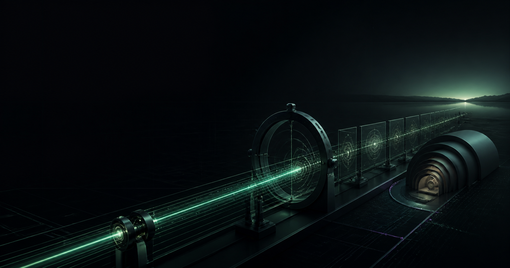

SOLANA OBSERVATORY
Ecosystem dashboard
Solana,
without the fog.
Six questions. One living system.
Every claim inspectable.
Built by Sathian Srikrishnan
 SOLANA OBSERVATORY SOLANA OBSERVATORY
SOLANA OBSERVATORY SOLANA OBSERVATORY